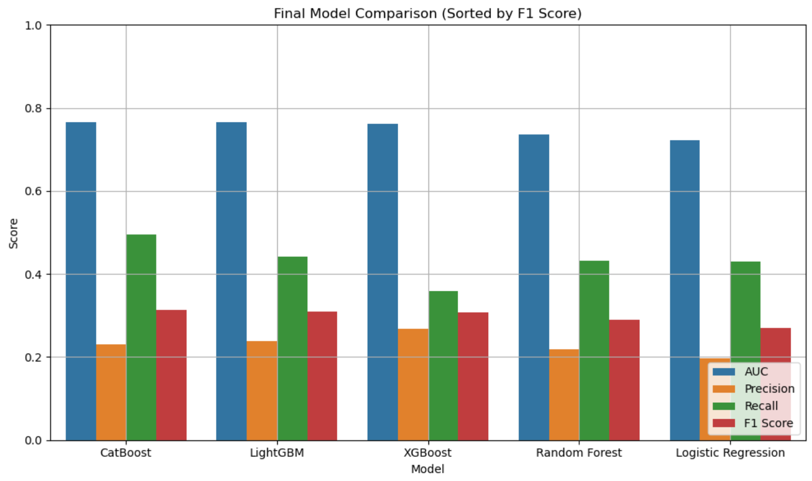
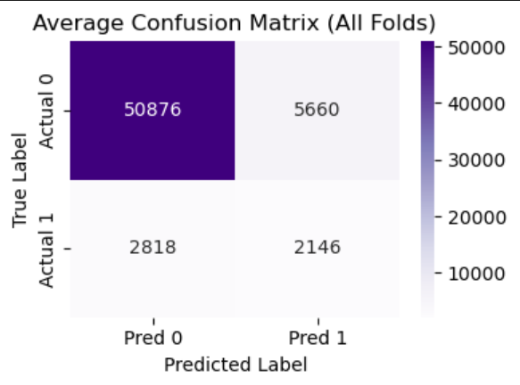
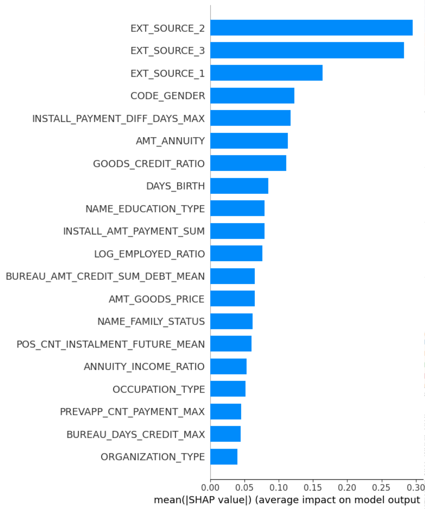
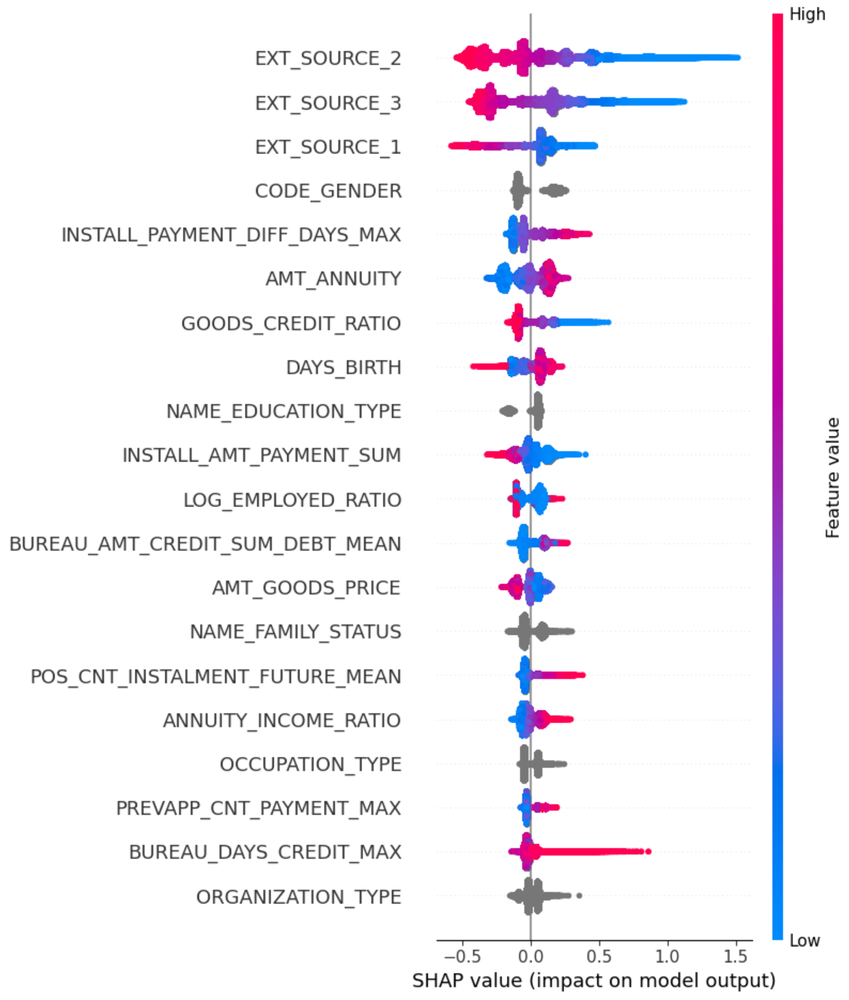
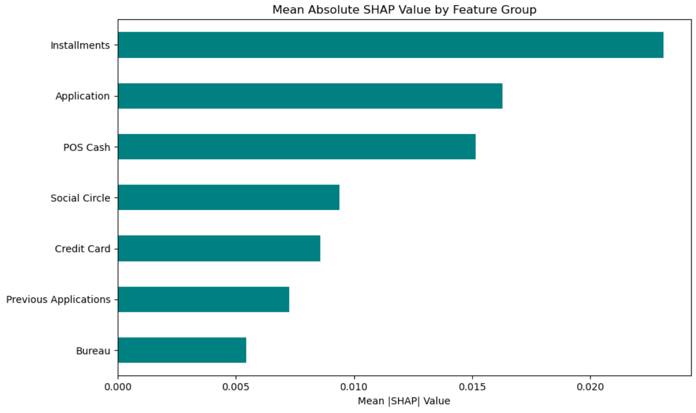
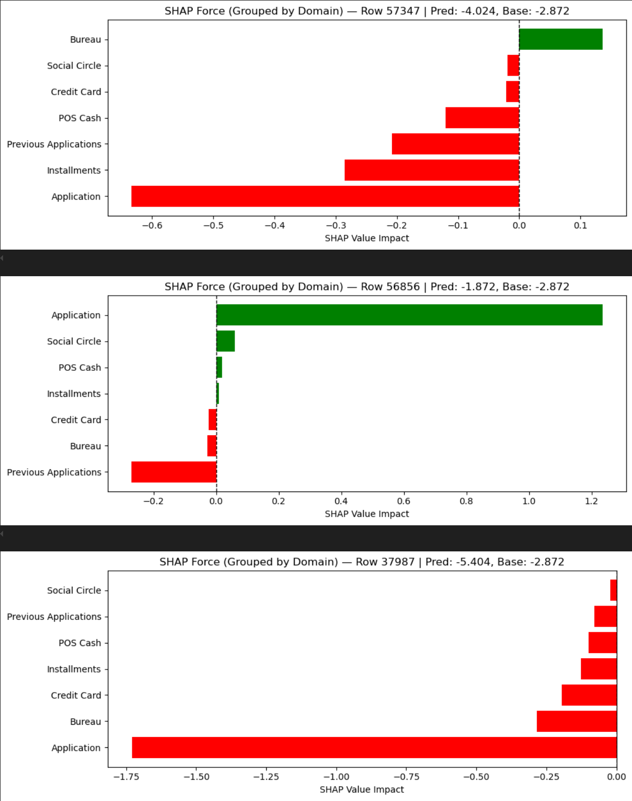

Final Modeling Report – Home Credit Default Risk
1. Objective
To build a machine learning model that accurately predicts the likelihood of a loan applicant experiencing payment difficulties. The model serves as a decision-support tool for credit approval, with a strong emphasis on recall due to the higher cost of false negatives in the lending domain.
2. Business Context
In credit risk modeling: - False negatives (missed defaulters) are costlier than false positives. - Therefore, recall was prioritized throughout the modeling process. - Additional metrics like AUC, precision, and F1 score were tracked for balance and optimization.
3. Data Pipeline Summary
- Training size: 307,511 loans
- Tables used: 7 relational files merged on
SK_ID_CURRorSK_ID_PREV - Final dataset: ~380 engineered features derived from application data, credit history, previous applications, card and installment balances, and repayment behavior
4. Feature Engineering Highlights
- Ratio features:
CREDIT_TO_INCOME,ANNUITY_TO_INCOME,EMPLOYED_BIRTH_RATIO - External risk scores:
EXT_SOURCE_1,EXT_SOURCE_2,EXT_SOURCE_3(top predictors) - Approval metrics:
APPROVAL_RATE,NUM_PREV_APPS - Repayment delay ratios and completion metrics from installments
- All features aggregated using
.groupby('SK_ID_CURR')followed by statistical summaries
Reference: See Feature_Engineering_Notes.md for complete feature list and rationale.
5. Modeling Strategy
Step 1: Sample Dataset Benchmarking
| Model | AUC | Recall | Precision | F1 Score |
|---|---|---|---|---|
| CatBoost | 0.779 | 0.583 | 0.327 | 0.415 |
| LightGBM | 0.776 | 0.546 | 0.349 | 0.425 |
| XGBoost | 0.774 | 0.512 | 0.321 | 0.395 |
| Random Forest | 0.767 | 0.528 | 0.312 | 0.392 |
| Logistic Regression | 0.772 | 0.511 | 0.324 | 0.396 |
Outcome: CatBoost was selected for its superior recall and categorical support.

Step 2: Full Model (CatBoost)
- Hyperparameter tuning via Optuna: optimized
learning_rate,depth,l2_leaf_reg - Stratified K-Fold CV (k=5) used to maintain target distribution across folds
- Post-training threshold tuning identified optimal F1 score at a threshold of 0.15
| Metric | Value |
|---|---|
| AUC | 0.778 |
| Recall | 0.683 |
| Precision | 0.328 |
| F1 Score | 0.446 |
| Threshold | 0.15 |
Scaling to the full dataset and enriching the feature set improved recall by ~10 percentage points.

6. Explainability (SHAP Analysis)
Global SHAP Insights:
- Most important features:
EXT_SOURCE_2,EXT_SOURCE_3 - Application-level features contributed the most raw impact


Domain-Level SHAP Grouping:
Grouped SHAP revealed: - Application features = majority influence - Installments + previous applications = stronger effect on defaulters - Bureau and social circle = modest but consistent signal

Local SHAP (Force Plots):
- Helped validate individual risky predictions
- Often tied to low external scores and high annuity burdens

7. Final Model Output
- Final CatBoost model retrained on all available training data with best Optuna parameters
- Threshold 0.15 applied for classification
- Test set predictions exported with probability column (
TARGET_PROB) for external evaluation or production use
8. Reproducibility
- Environment tracked via
environment.yml - All notebooks runnable in order:
1_EDA_FeatureEngineering.ipynb2_Modeling_CatBoost.ipynb3_Evaluation_Thresholding_SHAP.ipynb4_TestPrediction_Submission.ipynb
9. Conclusions
- CatBoost consistently outperformed other models on both sample and full data
- Feature engineering meaningfully boosted recall and interpretability
- Threshold tuning was crucial to align model output with business priorities
- SHAP tools provided transparency needed for financial risk environments
10. Recommendations
- Monitor model drift with time-based validation
- Consider deployment with API (e.g., FastAPI)
- Evaluate more complex ensembling or TabNet
- Incorporate cost-sensitive learning if real-world cost matrices are available